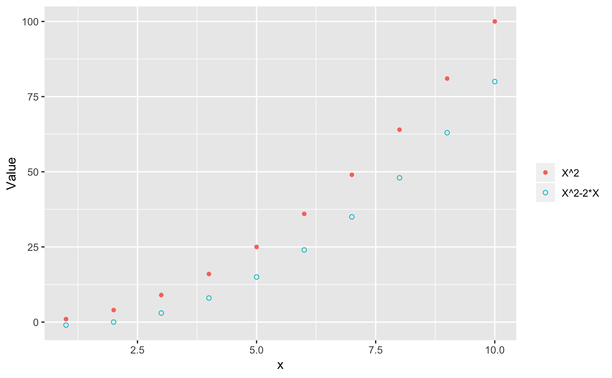
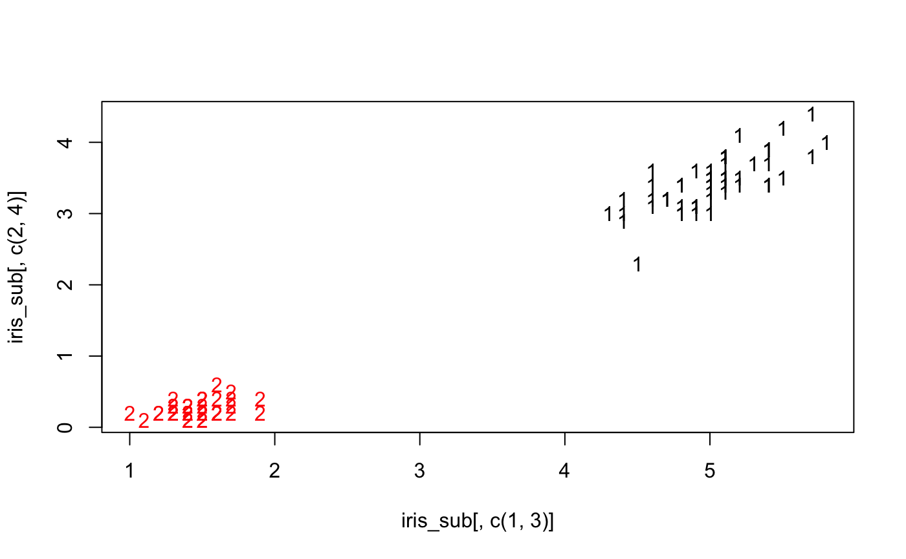

The goal of ggmatplot is to plot the columns of one matrix against the columns of another.
Example
This is a basic example which shows you how to use this package:
library(ggmatplot)
#> Loading required package: tidyverse
#> Registered S3 methods overwritten by 'ggplot2':
#> method from
#> [.quosures rlang
#> c.quosures rlang
#> print.quosures rlang
#> Registered S3 method overwritten by 'rvest':
#> method from
#> read_xml.response xml2
#> ── Attaching packages ───────────────────────────────────────────────────────────────────────────── tidyverse 1.2.1 ──
#> ✔ ggplot2 3.1.1 ✔ purrr 0.3.2
#> ✔ tibble 2.1.1 ✔ dplyr 0.8.0.1
#> ✔ tidyr 0.8.3 ✔ stringr 1.4.0
#> ✔ readr 1.3.1 ✔ forcats 0.4.0
#> ── Conflicts ──────────────────────────────────────────────────────────────────────────────── tidyverse_conflicts() ──
#> ✖ dplyr::filter() masks stats::filter()
#> ✖ dplyr::lag() masks stats::lag()
iris_sub <- subset(iris, Species == "setosa")
# Original way by matplot function
matplot(iris_sub[,c(1,3)], iris_sub[,c(2,4)])

# Modify legend label and axis
ggmatplot(iris_sub[,c(1,3)], iris_sub[,c(2,4)], shape = c("s","S"), legend_label = c("Sepal","Petal"), legend_title = "", xlab = "Length", ylab="Width")